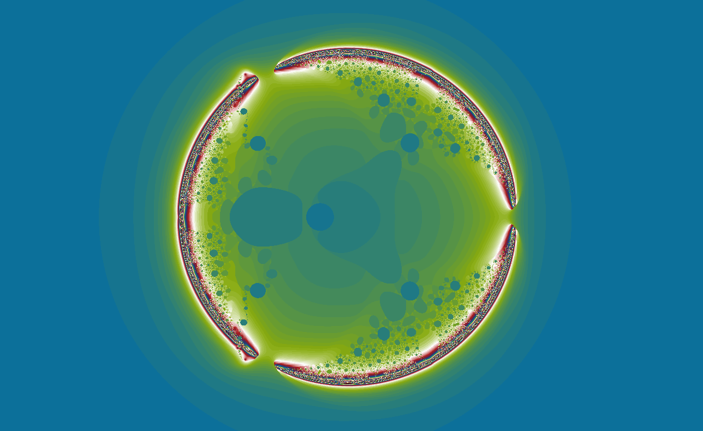
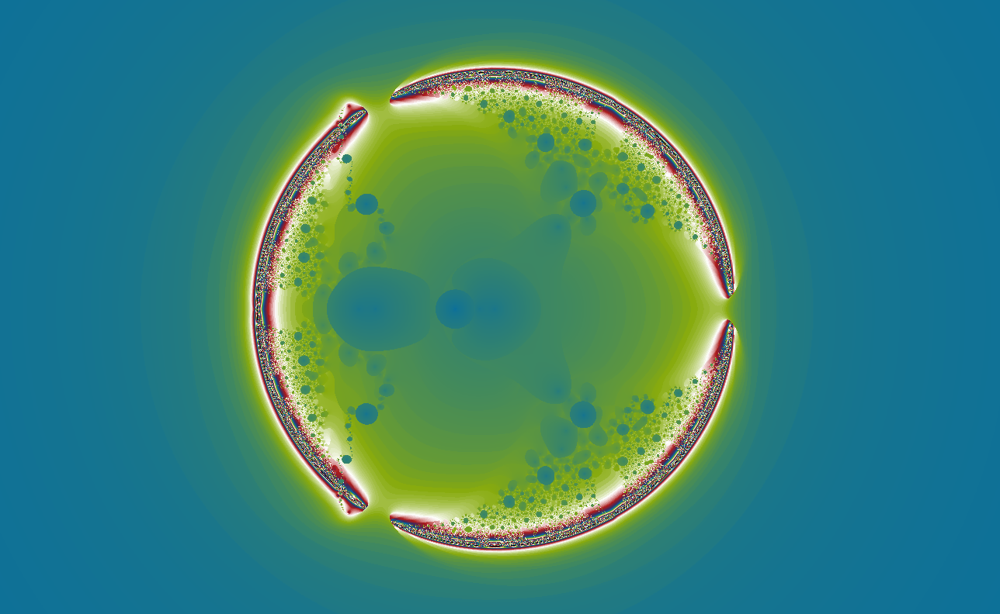
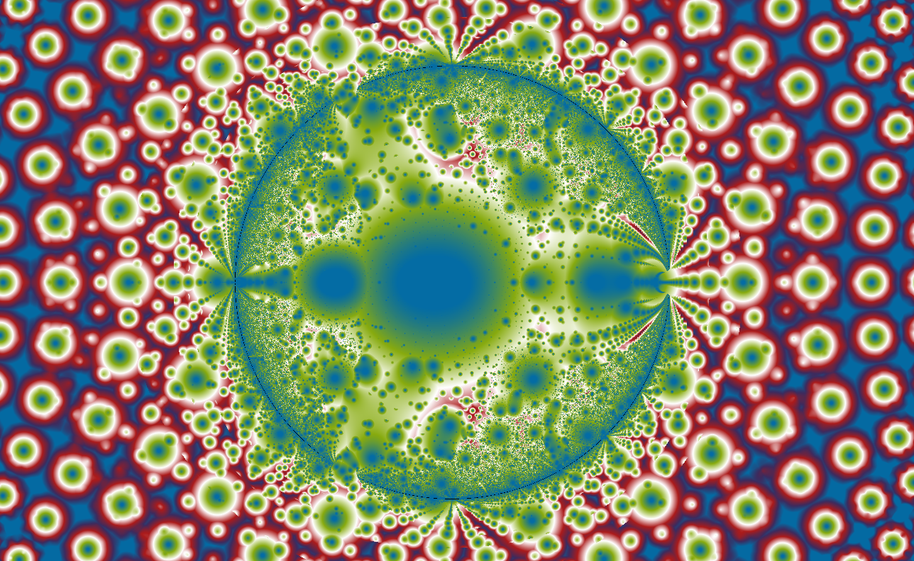
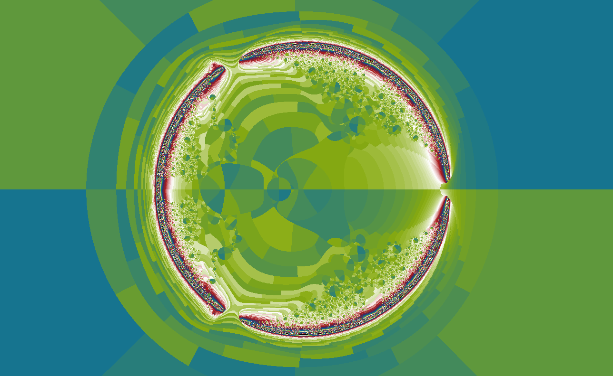
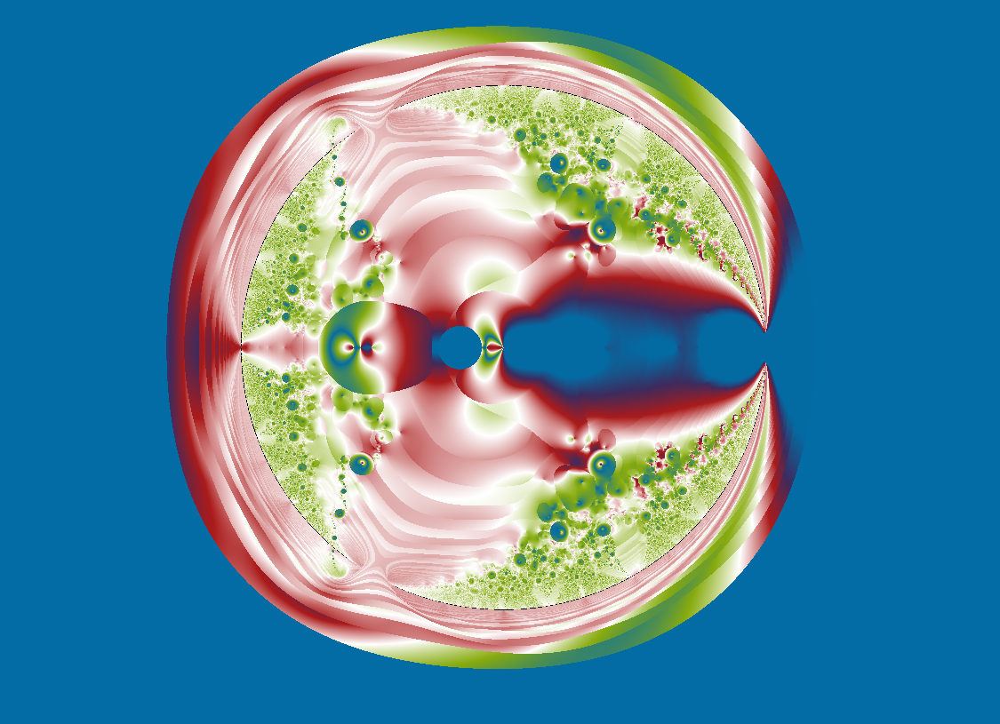
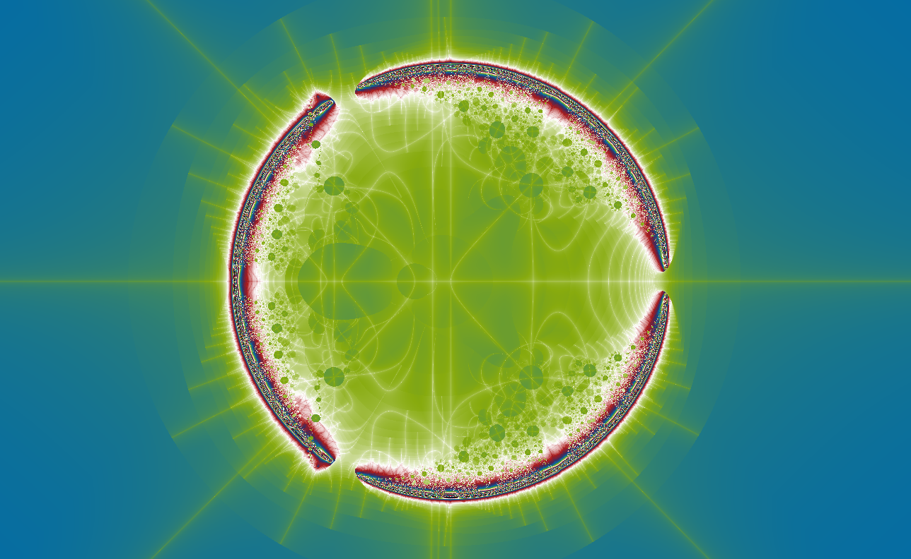

Experimental formulas
Cell
A division-driven map with organic-like compartments.
\(b_{n+1}=b_n/c,\quad z_{n+1}=z_n c+b_{n+1}/z_n\)
Cell is one of wxChaos’s strangest formulas. Its division term partitions the complex plane into structures resembling cells, walls, membranes, and organic tissue. The formula was discovered online by the author of wxChaos many years ago, but its original source has since been lost and has not been identified.

What to try first
Look for repeated walls and pockets. This page rewards looking at local texture more than global silhouette.
Turn on orbit display near a wall. Division by \(z\) can make neighboring paths diverge quickly.
Try smooth coloring when bands are too harsh, then orbit traps when you want a more graphic image.
Mathematical notes
The wxChaos Cell recurrence
wxChaos starts with \(z=c\) and \(b=c-\sin(c)\), then uses \(b\leftarrow b/c\) and \(z\leftarrow zc+b/z\). The \(b/z\) term is the sharp ingredient: when \(z\) passes near zero, the next value can change dramatically.
Coloring lenses
The set stays the same, but each rendering method asks a different question about the orbit.


Gaussian integer
Measures how closely escaping orbits pass near the complex integer lattice.
Apply in wxChaos

Triangle inequality
Turns relationships inside the orbit into layered, topographic texture.
Apply in wxChaos
Orbit traps
Colors points by how closely their orbits pass near the real and imaginary axes.
Apply in wxChaos